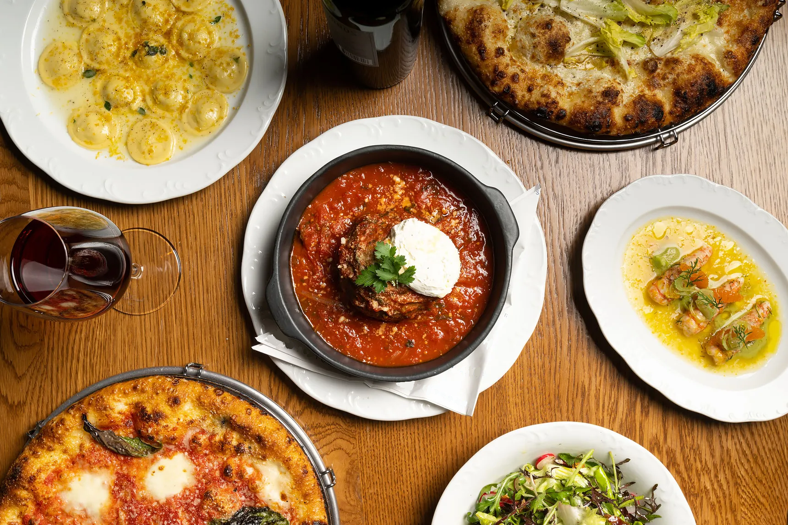
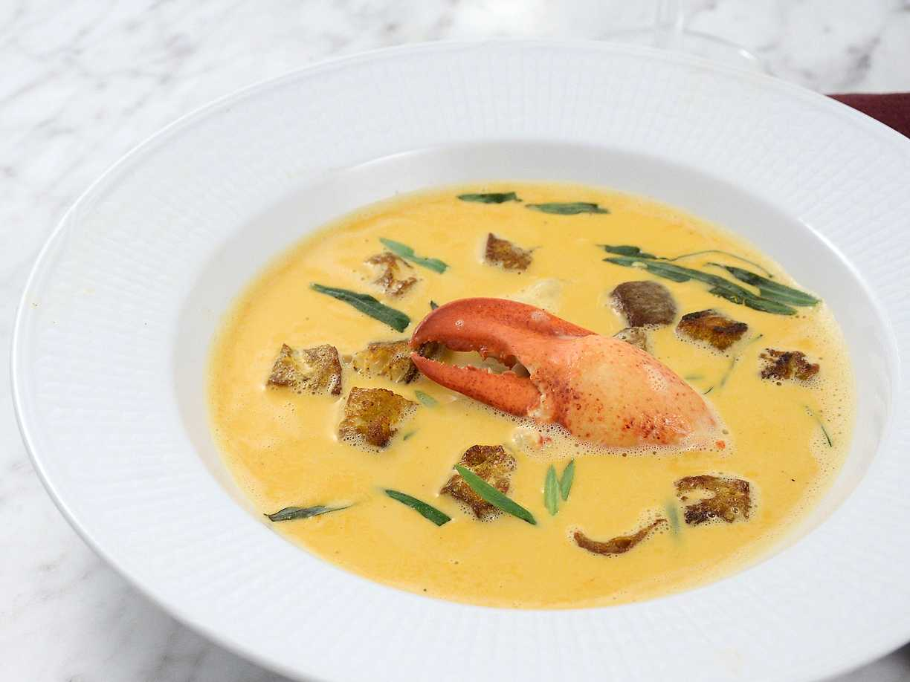
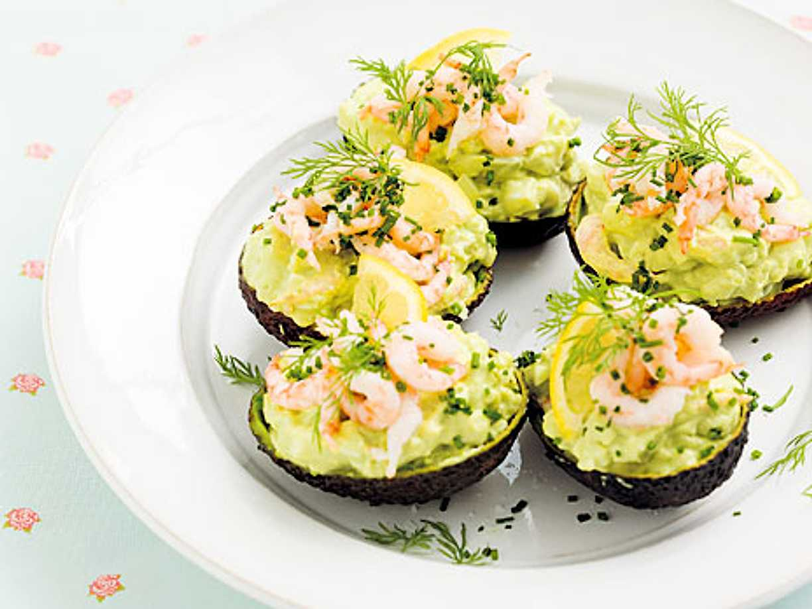
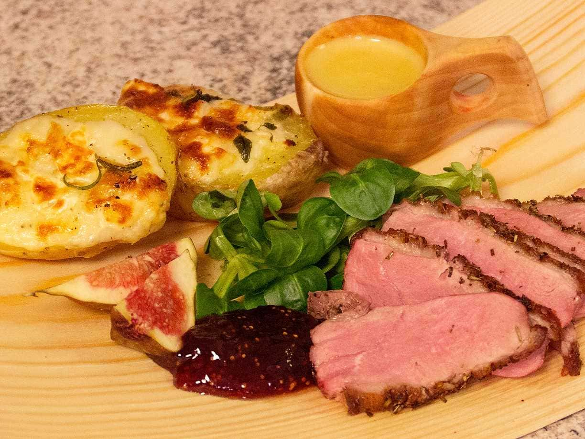
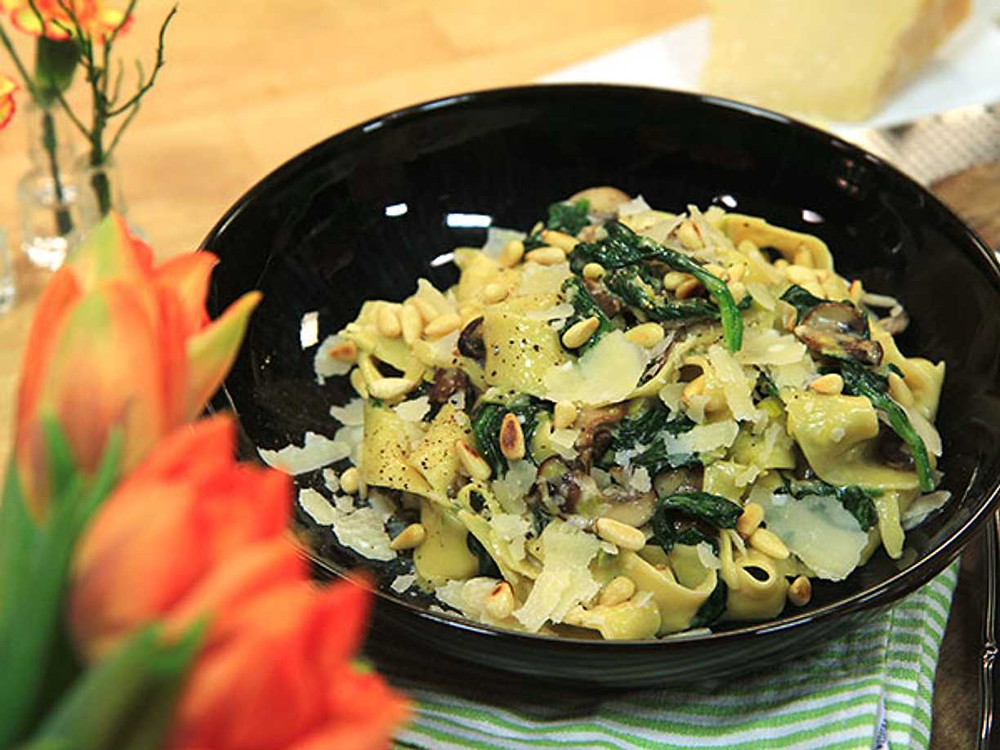
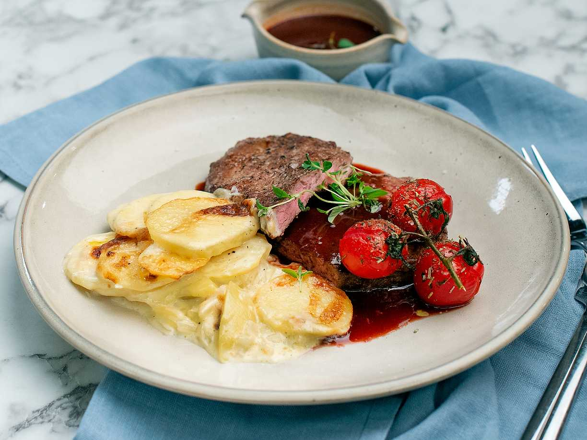
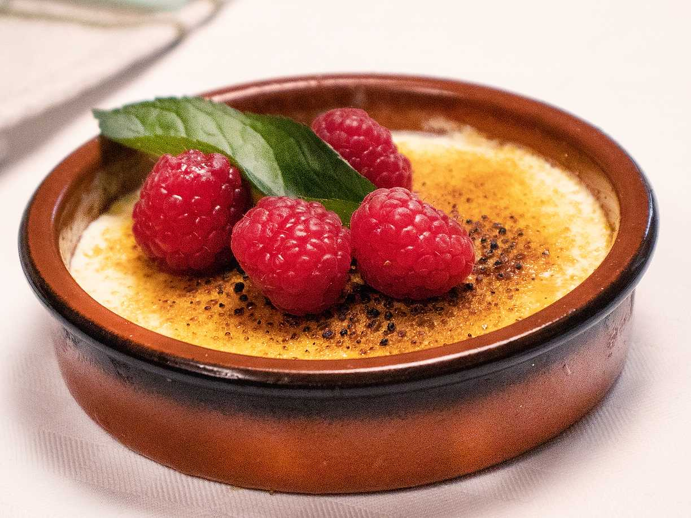
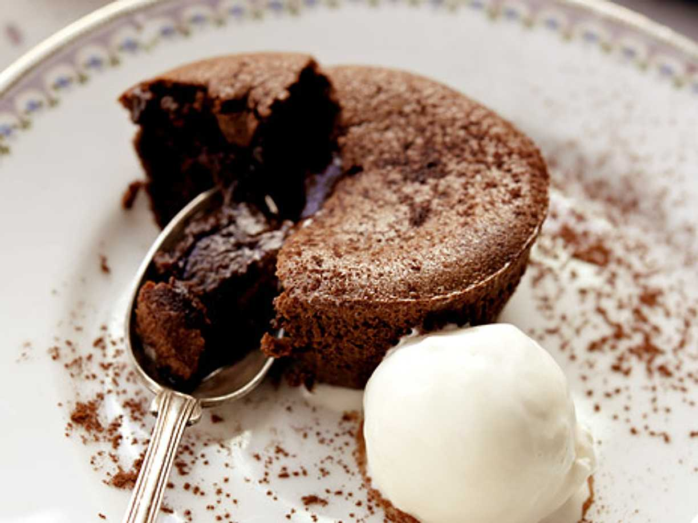
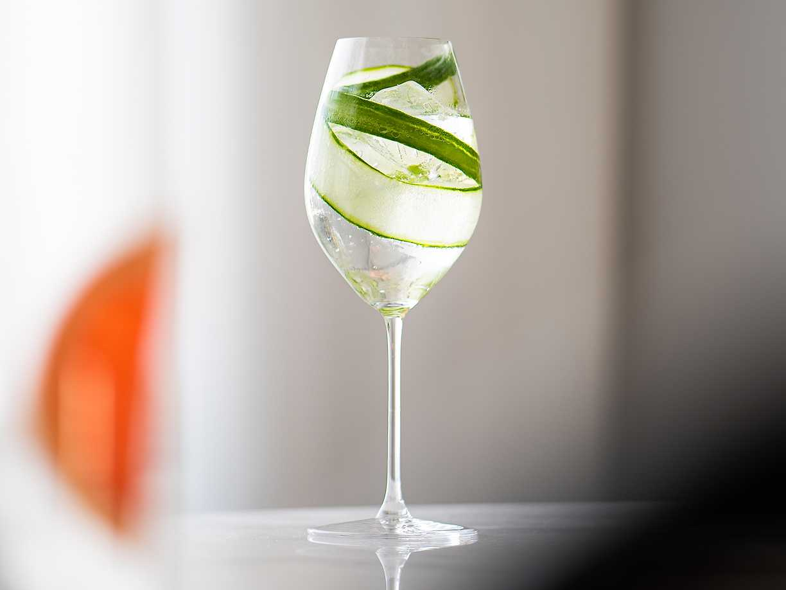
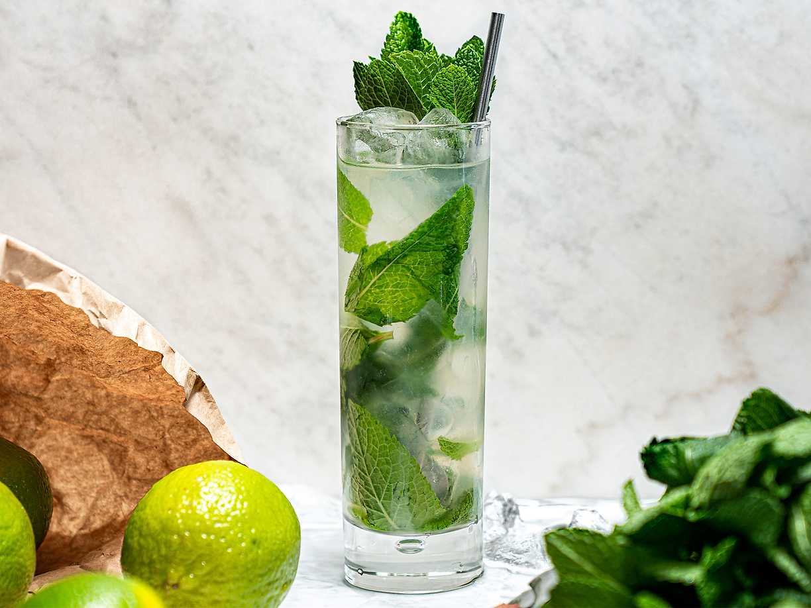

Meny


Förrätter
══════════════════

Krämig hummersoppa med saffranscroutonger på Chef Tingeling förkroppsligar havets delikatesser i varje sked. En smakrik och förförisk upplevelse av lyxig gastronomi.
Krämig hummersoppa med saffranscroutonger
120kr

Carpaccio med parmesan och rucola på Chef Tingeling är en elegant symfoni av smaker. Den tunnskivade oxfilén möter den nötiga parmesanosten och den peppriga rucolan i en harmonisk dans på tallriken.
Carpaccio med parmesan och rucola
140kr

Avokado- och räksalladen på Chef Tingeling är en fräsch och läcker kombination. Krämigheten från avokadon möter sötman och sältan från räkorna i en perfekt balanserad smakupplevelse.
Avokado- och räksallad
160kr
Huvudrätter
══════════════════

Rostad anka med äppelcidersås och rotsaker på Chef Tingeling är en smakrik och välbalanserad rätt. Den saftiga ankan möter den friska sötman från äppelcidersåsen och de mustiga smakerna från rotsakerna, skapar en symfoni av smaker på tallriken.
Rostad anka med äppelcidersås och rotsaker
220kr

Svamppasta med tryffelolja och parmesan på Chef Tingeling är en smakrik och lyxig måltid. Den doftande tryffeloljan förhöjer svampens djupa smaker, medan den krämiga parmesanosten binder samman rätten till perfektion. En delikatess som bjuder på en smakresa till det italienska köket i varje tugga.
Svamppasta med tryffelolja och parmesan
260kr

Grillad entrecote med rödvinssås och potatisgratäng på Chef Tingeling är en klassisk och fyllig måltid. Den saftiga entrecoten, perfekt grillad till din önskade stekgrad, kompletteras av den rika smaken från den reducerade rödvinssåsen och den krämiga potatisgratängen. En oemotståndlig kombination som garanterar en tillfredsställande smakupplevelse vid varje tugga.
Grillad entrecote med rödvinssås och potatisgratäng
300kr
Efterrätter
══════════════════
Vit chokladpannacotta med passionsfruktskräm på Chef Tingeling är en himmelsk avslutning på din måltid. Den lena och krämiga pannacottan möter den friska och tropiska smaken av passionsfrukten i en perfekt balans. En söt och syrlig symfoni som smälter på tungan och lämnar en minnesvärd eftersmak av ren njutning.
Vit chokladpannacotta med passionsfruktskräm
100kr

Crème brûlée med skogsbär på Chef Tingeling är en sensationell söt avslutning på din måltid. Den lena och krämiga vaniljkrämen möter det fräscha inslaget av skogsbären, vilket skapar en perfekt balans mellan sötma och friskhet. Med varje sked av denna delikata dessert fördjupas din smakupplevelse och lämnar dig med en känsla av fulländad njutning.
Crème brûlée med skogsbär
115kr

Chokladfondant med vaniljglass på Chef Tingeling är en himmelsk dessert. Den varma och krämiga chokladfondanten bryter perfekt ihop med den svala vaniljglassen, skapar en smältande symfoni av smaker och texturer. Varje tugga är en förförisk dans av chokladig rikedom och söt vanilj, vilket gör denna efterrätt till en oförglömlig avslutning på din gastronomiska upplevelse.
Chokladfondant med vaniljglass
130kr
Drinkar
══════════════════

Gin & Tonic med gurka och fläder på Chef Tingeling är en förfriskande och elegant upplevelse. Gurkans fräschhet och fläderns milda sötma kompletterar ginens aromatiska toner på ett harmoniskt sätt. Varje klunk är en balanserad symfoni av smaker som tar din dryckesupplevelse till nya höjder av njutning.
Gin & Tonic med gurka och fläder
90kr

Mojito med färsk mynta på Chef Tingeling är en uppfriskande och förförisk cocktail. Den svala kombinationen av rom, lime och mynta skapar en harmoni av smaker som dansar på tungan. Varje sip av denna klassiska drink är en resa till karibiska stränder och en perfekt komplement till din matupplevelse.
Mojito med färsk mynta
105kr
Whiskey Sour med citron och sockerlag på Chef Tingeling är en smakrik och balanserad cocktail. Den robusta smaken av whiskey balanseras perfekt av den friska syran från citronen och den söta touchen från sockerlagen. Varje klunk är en harmonisk symfoni av smaker som tar din smakupplevelse till nya höjder.
Whiskey Sour med citron och sockerlag
120kr